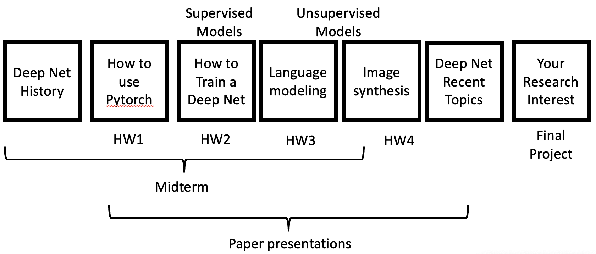

Class time and Location: Tuesdays 11:45 AM - 1:25 PM and Thursdays 2:50 PM - 4:30 PM, Behrakis Health Sciences Center 325 (BK 325)
The class meetings are in-person only.
The class is very participatory, with groups of students presenting and discussing papers on most days. On the first day of class, please fill out https://bit.ly/cs7150-roles26 to sign up.
The class will be 100% in-person.
Sign up for piazza here: https://piazza.com/northeastern/fall2026/cs7150/home
Professor: David Bau davidbau@northeastern.edu
Professor Office Hours: right before class 2pm Thursdays at the lecture hall.
TAs: Grace Proebsting proebsting.g@northeastern.edu, Vishwajeet Hogale hogale.v@northeastern.edu
TA help hours:
To be posted.
In this course we will learn the principles and practice of deep learning methods and research.
We will cover the capabilities of deep networks, the main methods for training them effectively, and the common architectures and techniques for using a deep network to process and produce images and natural language text. In addition to getting experience using these methods, we will discuss seminal research papers, overview some of the main questions and debates that have emerged in deep learning research, and explore some current research topics. There will be a final project where you work with a partner to choose, investigate, and write a blog exploration of a deep learning research topic centered on a paper you choose.
We are planning 160 points total of course work.
Class participation: 40 points. In-class paper presentations and discussion.
Semester Overview: Throughout the semester, 15 lectures will be dedicated to discussing each one of the 15 selected research papers by a panel of 12 students that will lead the discussion with follow up questions from the audience (or questioners). These papers & their respective dates are pre-scheduled & can be seen in timeline schedule of the course structure.
Points Breakdown & To Dos (40 Points):
Roles (several students for each paper):
Format & Preparation:
- Duration: Each paper discussion will last 45 minutes
- Roles & Sign-up: Students are required to fill the role-playing sign-up form on Canvas before September 17, 2026. Here, you can indicate your role preference for each paper. While we aim to honor your preferences, please understand that adjustments might be necessary.
- Slide Deck & Materials Submission: All participants of the panel, should prepare and submit the required materials, one night before the scheduled discussion. This includes:
- Google Slides presentation only for those in designated roles (Go to the shared drive and read through instructions in 'INSTRUCTIONS: For reference purposes' File, it is detailed for every role, what particularly you have to do, where exactly and what files you have to upload)
- A question about the paper for the broader class (Nightly Questions through canvas)
- Acknowledgment of the role you're playing for that paper (If you have a role for a particular paper, within the same nightly question assignment, you can select role from the options acknowledging which role will you play for that paper)
Class Procedure (during presentation):
Homework: 40 points. Programming and calculation exercises.
These will be jupyter notebooks to be worked through by students individually, due to be submitted online every two weeks at 11AM before Monday class. Late homework submissions will be accepted but will lose points per day late, no points after a week. 10 points per homework.
Midterm: 40 points. A written exam about foundational methods. Closed-book.
Final Project: 40 points. A blog/webpage report and presentation about a research paper that you choose. Done by groups of 2 students (3 with permission). Similar to the paper-reading roleplaying exercise, except that you choose the papers, you play all the roles, and instead of putting together slides, you will assemble an illustrated blog with all your analysis. Optionally, your project may include a programming demonstration or a research extension of the concepts in the paper that you choose.
Late homework submission will be accepted. Every student has a bank of 3 free late days that can be applied without asking permission (e.g., 2 days on one homework, 1 day on another homework). Beyond the banked 3 late days, automatically 20% of the points will be penalized for each day late.
Collaboration is allowed, but you should think about the problems yourself before discussing them with others. When you do seek out help, we strongly advise you to find a fellow classmate to talk with and work together rather than copying an answer. You will all learn much more by thinking collaboratively and explaining ideas to one another. When you collaborate, you must acknowledge your collaborators by listing them explicitly.

*Starred items may be on the midterm exam.
|
The historical and intellectual evolution of deep network methods:
How to use deep network tools (pytorch)
How to train a model deeper than a few layers
How to improve generalization
Learning to Learn
Doing research
* Starred concepts may be on the midterm.
|
How to design effective objectives
How to input images
How to output images
How to understand and visualize a convolutional network
How to input and output text
How to understand and visualize a language model
What makes a good representation
|
(Note: we are sure to alter this schedule, likely to omit some topics or discuss others.)
| Date | Note | Handout | Due | Topic | Activity | Reading |
| Thursday, September 10, 2026 | HW1, reading signups |
History: neurons, perceptrons, universality, backprop. | david | https://papers.baulab.info/ | ||
| Tuesday, September 15, 2026 | Signups | Tensors, GPUs, Autograd, Optimizers, Modules, DataLoader | How-to-read-pytorch | Rumelhart 1986 (Backpropagation) | ||
| Thursday, September 17, 2026 | Classification and backpropagation | david | Bottou 1990 (Modules) | |||
| Tuesday, September 22, 2026 | Last day to add/drop | Optimization and deep networks | presentation | Kingma 2015 (ADAM) | ||
| Thursday, September 24, 2026 | HW2 | HW1 | Initialization | presentation | Glorot 2010 (initialization) | |
| Tuesday, September 29, 2026 | Equivariances and convolutions | david | Lecun 1989 (LeNet) | |||
| Thursday, October 1, 2026 | Achieving Depth: residual nets, batchnorm | presentation | He 2016 (ResNet) | |||
| Tuesday, October 6, 2026 | HW3, project signup | HW2 | Neural Language modeling | david | Elman 1990 (RNNs) | |
| Thursday, October 8, 2026 | Recurrent neural networks and gating | presentation | Cho 2014 (GRUs) | |||
| Tuesday, October 13, 2026 | Transformers | presentation | Vaswani 2017 (Transformers) | |||
| Thursday, October 15, 2026 | Multimodal representation learning: CLIP | presentation | Radford 2021 (CLIP) | |||
| Tuesday, October 20, 2026 | HW4 | HW3 | Midterm review | david | ||
| Thursday, October 22, 2026 | Midterm | Midterm exam | midterm | |||
| Tuesday, October 27, 2026 | Image generation | david | ||||
| Thursday, October 29, 2026 | Project titles and teams due | Adversarial generation: GANs | presentation | Goodfellow 2014 (GAN) | ||
| Tuesday, November 3, 2026 | Variational Autoencoders: VAEs | presentation | Kingma 2013 (VAE) | |||
| Thursday, November 5, 2026 | HW4 | Normalizing Flows | presentation | Dinh 2017 (Real NVP) | ||
| Tuesday, November 10, 2026 | Diffusion Models | presentation | Sohl-Dickstein 2015 (Diffusion) | |||
| Thursday, November 12, 2026 | Large language models | presentation | Brown 2020 (GPT-3) | |||
| Tuesday, November 17, 2026 | RLHF and DPO | presentation | Ouyang 2022 (RLHF) | |||
| Thursday, November 19, 2026 | Project abstracts due | How to do research | david | |||
| Tuesday, November 24, 2026 | Mechanistic interpretability | david | Meng 2022 (ROME) | |||
| Thursday, November 26, 2026 | Thanksgiving, fall break | |||||
| Tuesday, December 1, 2026 | Mamba | guest | Sen Sharma 2024 (Mamba) | |||
| Thursday, December 3, 2026 | Project reviews due | In-context learning | guest | Todd 2024 (In-context Learning) | ||
| Tuesday, December 8, 2026 | Model editing | guest | Gandikota 2024 (Unlearning) | |||
| Thursday, December 10, 2026 | Poster day | final projects | ||||
| Monday, December 14, 2026 | final project report due (midnight) | final projects |